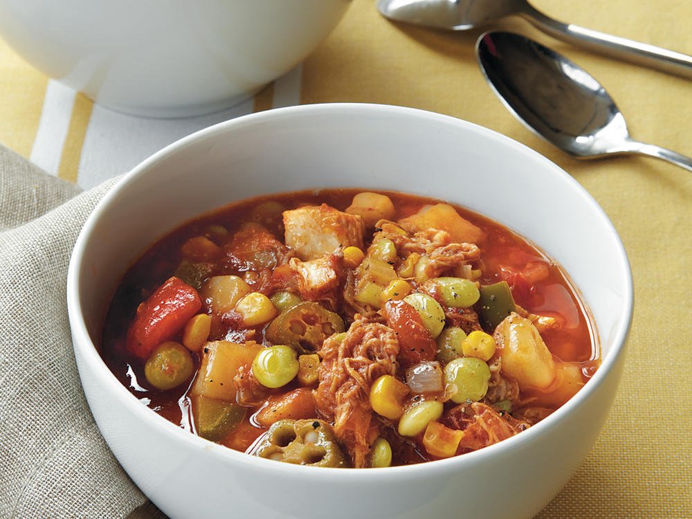
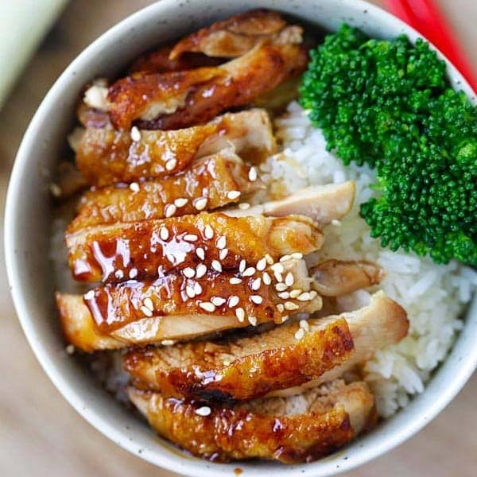
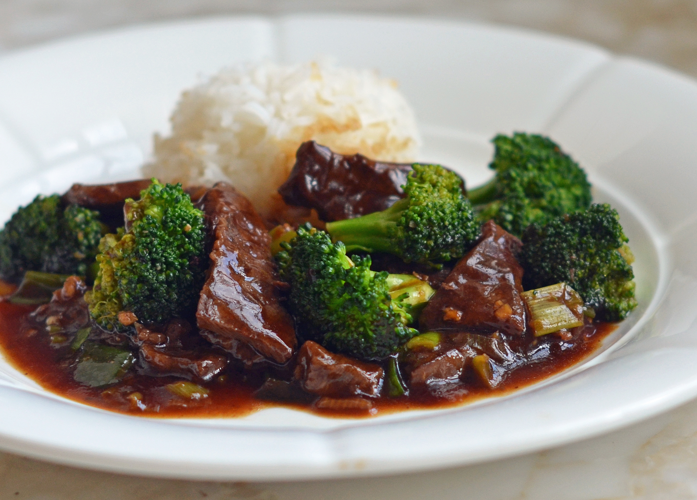
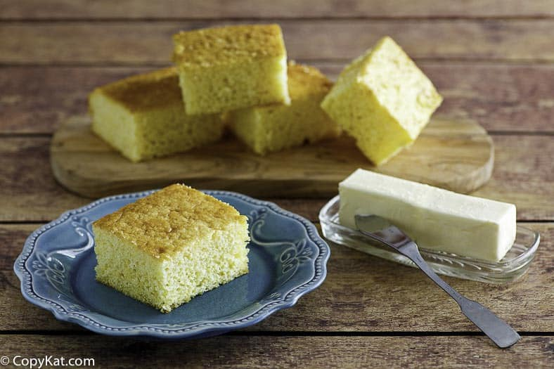
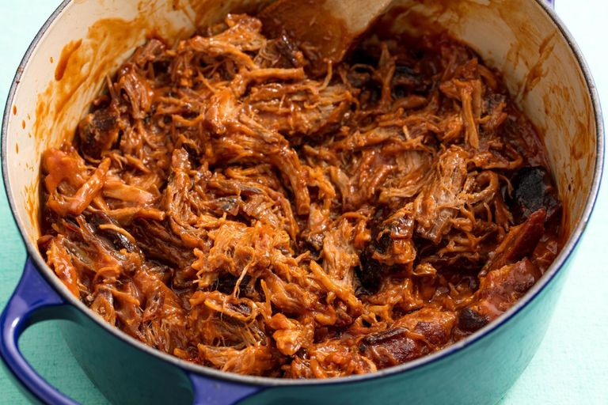
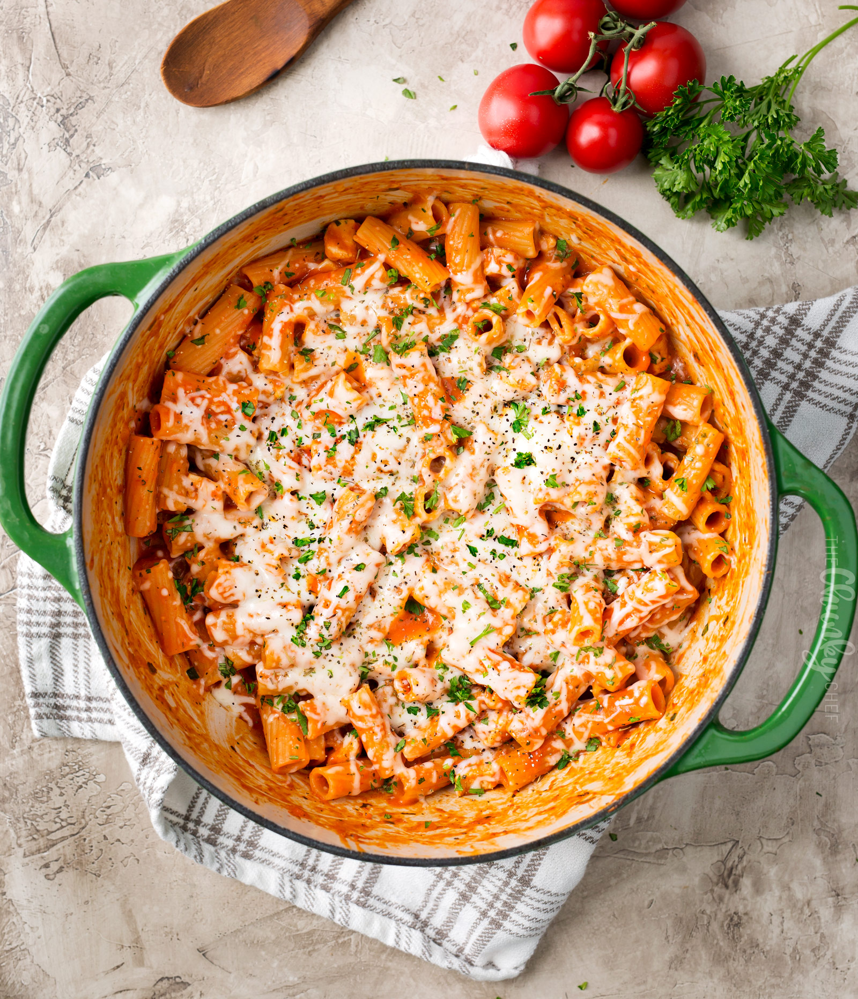
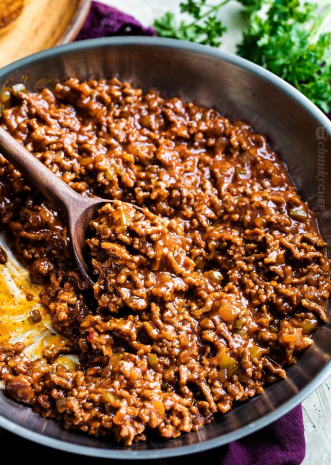
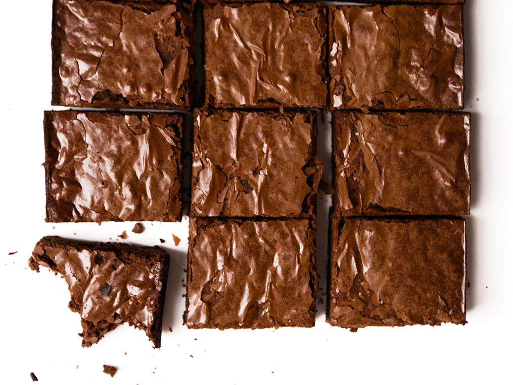

Meals
Desserts
Recipes I find simply delicious
Simple & Delicious Meals

Brunswick Stew

Teriyaki Chicken

Beef and Broccoli

Corn Bread
Spaghetti

Pulled Pork

Parmesan Pasta

Sloppy Joe
Desserts for Your Sweet Tooth

Brownies